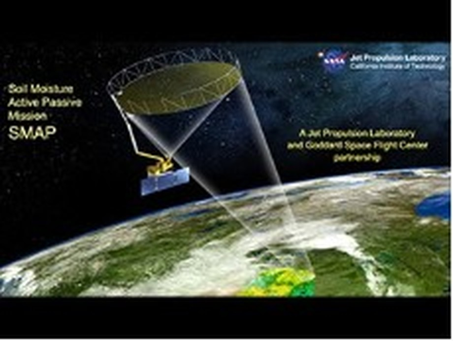
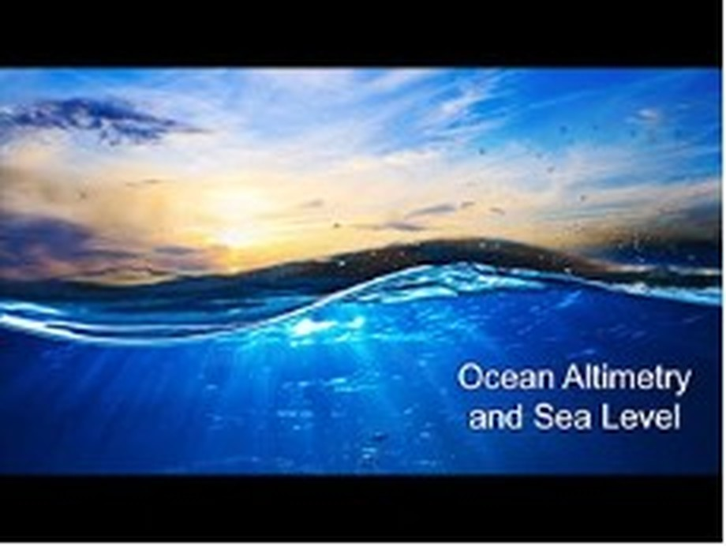

01
Context
JPL manages a portfolio of Earth science missions, each with its own science story.
- Missions range from soil moisture (SMAP) to sea level (TOPEX/Jason, SWOT).
- Decks are published for public download on JPL's Earth Science site.
- [Add: who uses the decks]
02
Problem
[Headline: the problem in one sentence]
- [Proof point: what was missing or hard before]
- [Proof point: who it affected]
- [Proof point: constraint, such as accuracy review or deadline]
03
My role
I designed mission and technology decks for JPL-managed Earth science missions.
- JPL Earth Science intern, about one year, starting 2018.
- [Add: who you worked with: scientists, mission teams, web team]
- [Add: what you owned end to end]
04
Approach
[Headline: how you turned mission science into slides]
- [Proof point: structure or template decision]
- [Proof point: how you worked with scientists on accuracy]
- [Proof point: visuals and data you used]



05
Outcome
The decks are published for public download on JPL's Earth Science site.
- Coverage across SMAP, GRACE and GRACE-FO, ECOSTRESS, the Orbiting Carbon Observatories, and TOPEX/Jason with SWOT.
- [Add: how the decks were used]
Results line: show only with a real number. Otherwise remove.
06
What I'd do differently
[One honest reflection]
- [What you would change now]
- [What you would measure from day one]